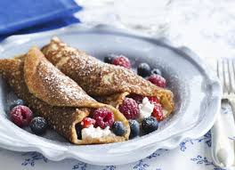
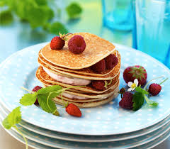
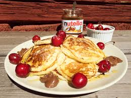

Hur man kan lägga upp pankakor
Och tillbehör!
RULLE

TORN

HÖG

Tillbehör:
-Sirap är gott på vad som helst! Varför inte pannkakor?
-Sylt, det finns olika sorters sylt så välj bara en du gillar! Det kommer bli svårt!
-Bär, t.ex. lingon kan bli gott på pannkakan! Lingon är ju gott på köttbullar också! (köttbulls-pannkaka?)
-Frukt kan bli bra också! Ta bara en frukt du gillar!
-Glass!
-Nutella inehåller palm-olja som inte är bra, för att man hugger ner regnskog för att odla palmer som man sedan hugger ned! Testa att göra egen nutella :)